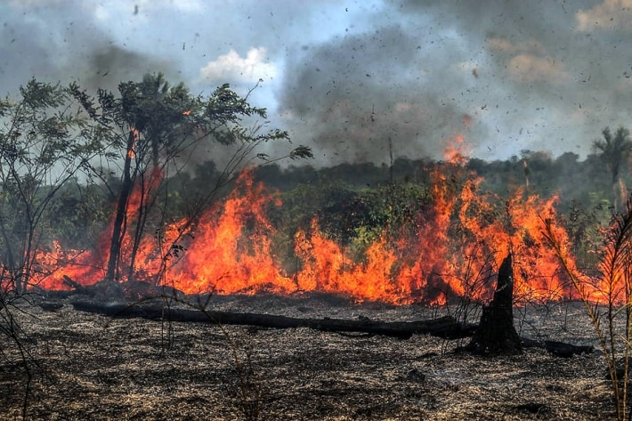

Desmatamento no Brasil
O desmatamento no Brasil é fruto de um processo histórico de ocupação do território e de predação dos recursos naturais ao longo dos anos. Ele é marcado pela atuação de agentes econômicos importantes e pela ausência do Estado em promover políticas de prevenção e fiscalização da derrubada das matas.
A partir do ano de 2008, políticas ambientais de desenvolvimento sustentável e o incentivo às práticas de manejo e conservação das florestas possibilitaram uma diminuição do volume desmatado. Entretanto, nos últimos anos, a taxa de desmatamento no Brasil voltou a subir, em razão da atuação de madeireiros, mineradores e produtores agropecuários que se aproveitam da inércia do Estado para derrubar áreas de mata preservada.
De acordo com dados do Projeto de Mapeamento Anual da Cobertura e Uso do Solo no Brasil (MapBiomas), no ano de 2019, os biomas brasileiros mais desvatados foram:
- Amazônia
- Cerrado
- Pantanal
- Mata Atlântica
No ano de 2020, o índice de desmatamento desses biomas continuou muito elevado, sendo notório no país uma grande volume de queimadas, principal mecanismo utilizado pelos que atuam na derrubada da floresta.
Desmatamento na Amazônia
Conforme dados levantados pelo MapBiomas, mais de 770 mil hectares de áreas florestadas da Amazônia foram desmatados em 2019. O bioma Amazônia foi o mais atingindo pelo desmatamento nos últimos anos, com um volume de derrubada duas vezes maior que o segundo bioma mais atingido, o Cerrado. Esse cenário é explicado, em especial, pela expansão da fronteira agrícola na região, sendo que os produtores agropecuários utilizam do desmatamento para aumentar-se a área de cultivo.
A expansão da fronteira agrícola nesse bioma é caracterizada pela derrubada indiscriminada da floresta na região centro-sul da chamada Amazônia Legal. Essa região é conhecida historicamente pelo Arco do Desmatamento, sendo a que apresenta o maior volume de desmate na região amazônica. Sendo assim, a prática da agropecuária, com destaque para o modelo extensivo de produção, é a principal causadora do desmatamento na Amazônia.
Desmatamento na Mata Atlântica
A Mata Atlântica é o bioma mais devastado do Brasil, sendo que, na atualidade, restam menos de 13% da cobertura original desse tipo vegetacional. No último ano, de acordo com dados do MapBiomas, cerca de 10 mil hectares da Mata Atlântica foram derrubados. Entre as principais causas dos desmatamento nesse bioma, estão a extração de recursos naturais, a utilização de madeira para produção de carvão vegetal e celulose, e, ainda, o avanço da urbanização. A criação de loteamentos ilegais, em áreas rurais e de preservação, fomentados pelo crescimento das cidades, gera grande parte do volume de corte da Mata Atlântica na atualidade.
Desmatamento no Cerrado
Os dados obtidos pelo MapBiomas mostram que mais de 408 mil hectares do Cerrado foram desmatados no ano de 2019, sendo esse o segundo bioma mais devastado do Brasil. O desmatamento em regiões de Cerrado está ligado diretamente ao desenvolvimento de atividades produtivas, em especial, a agropecuária.
O avanço da agricultura e da pecuária na região, caracterizado pela expansão da fronteira agrícola brasileira, gera o maior volume de derrubada florestal nesse bioma. O destaque está na produção de cultivos de soja, milho e algodão — modelo baseado na monocultura de exportação e que necessita de grandes áreas desmatadas para a sua implementação.